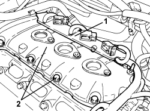

1016A34 RIGHT TAPPET COVER - R.R. AND REPLACE GASKET
- Path
- Procedures > 10 ENGINE > 1016 CYLINDER HEAD/S > 1016A TAPPET COVERS > 1016A34 RIGHT TAPPET COVER - R.R. AND REPLACE GASKET
- Kind
- repair procedure (removal / refitting; the operation number is the code)
- Applies to
- engines: 3.2 JTS; all production periods
- Interactive page
- https://sloeber94.github.io/elrnDB-aBrrSpdr/en/#/946001813
Applies to: engines: 3.2 JTS; all production periods
 Removing
Removing
 Refitting
RefittingOp. 1016A10 SOUND-PROOFING COVER - R.R
Op. 1072B50 AIR CHAMBER - R.R.
Op. 5510C18 RIGHT CYLINDER HEAD IGNITION COIL - R+R
1. Move the wiring mounting bracket forwards, in the direction of travel, to release it from the retaining clips on the tappet cover and then move it to one side.
- Release the engine wiring from the intermediate retaining clips.
2. Undo the bolts and remove the tappet cover for the right head.

Applies to: engines: 3.2 JTS; all production periods
Refitting
Removing- Place the tappet cover for the right head in position and secure it by tightening the bolts to the recommended torque.
Component | Fastening | dia | Value (daNm) | Validity |
|---|---|---|---|---|
Tappet cover | Bolt | - | 1.0 | 3.2 JTS |
- Secure the engine wiring using the intermediate retaining clips.
- Place the wiring mounting bracket in position and secure it to the tappet cover using the retaining clips.
Op. 5510C18 RIGHT CYLINDER HEAD IGNITION COIL - R+R
Topics linked from this page (3)
- 1016A10 SOUND-PROOFING COVER - R.R
- 1072B50 AIR CHAMBER - R.R.
- 5510C18 RIGHT CYLINDER HEAD IGNITION COIL - R+R